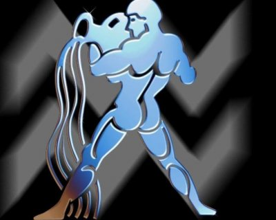

(20 Ocak - 18 Şubat)
Özgürlükleri için savaş verirken en güzel aşkları yaşar ve evlilik dönemeçlerinden hızla dönerken, geride kalanları umursamazlar.. Dost yanlısı yapılarıyla çevreleri öylesine kalabalıktır ki; bazen aşkla dostluğu birbirine karıştırır ve en sonunda, onları okul yıllarından tanıyan biri ile sürpriz bir evlilik yaparlar. Sonuç, genellikle yanlış bir karar ve boşanma ile sonuçlanan birliktelik. Yine de bu kadar ümitsiz değil tabii.. Onlar aslında hem değişen ve yine de aynı kalabilen ender kişilerdir.. Bir Kova kadınıyla yaşamak son derece eğlenceli ve hareketlidir. Anne olmayı pek beceremezler. Çocuklarına daha küçük yaşlarda büyük gibi davrandıkları için, onların yeteneklerini çabuk keşfeder ve bir abla gibi onlarla ilgilenirler. Çocukları kova annelerini çok sever ve onların her anlattığı şeyi ilgiyle dinlerler. Yaşamın her türlü sürprizine açık kişilerdir. Konuşma tarzı pratik ve direk olup zaman kaybetmekten hoşlanmazlar. İyi bir eğitim almış ve bilgisini yerinde kullanan bir kişiliğe sahipse yaşamı oldukça keyifli algılarlar.. Akademik kariyer yapmaya müsait bir zihin kapasiteleri vardır. Aşk yaşantısı karışık fakat isteklerinde sabittirler. Günün değişen koşullarına hızlı bir şekilde geçerler ve zevklerinde değişimler onları zorlamaz. Gerçek dostlarından asla vazgeçmezler Çocukluk anılarına bağlı ve hala bazı küçük eşyalarını korumakta ısrarcıdırlar.